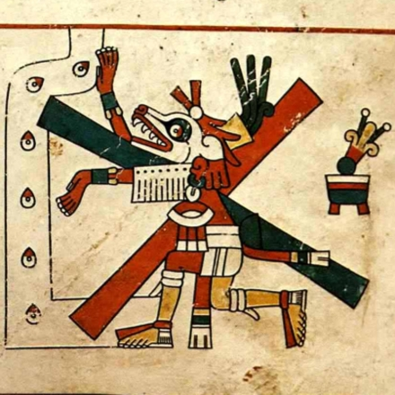

Divinità facente parte della più antica mitologia azteca. È, nella tradizione riportata da numerose pergamene mesoamericane, il fratello di Quetzalcoatl, dal quale si distingue per la mancanza di piumaggio; è solitamente raffigurato nella forma di un serpente con ali di pipistrello, una tagliente coda biforcuta, una folta criniera sanguigna, un muso allungato di coccodrillo munito di micidiali zanne.

Rientra nel gruppo della divinità ctònie, la sua qualifica principale è quella di Tauroboliaste e Psicopompo: suo compito precipuo, infatti, era quello di guidare le anime al Mictlàn, l'Oltretomba delle religioni precolombiane. Tuttavia, almeno stando alle leggende, non era raro che questa divinità, nota tra tutte le altre per la nobiltà d'animo, s'impietosisse delle anime che trasportava, consentendo ad esse di risorgere nei rispettivi corpi: simili eventi erano sovente accompagnati da mastodontiche scosse telluriche, e talvolta da possenti maremoti. Le ricerche dell'antropologo John C. Gnostolds (1898-1973), condotte nei pressi della città santa di Sobbabia, hanno portato alla luce numerose sepolture che non contenevano più cadaveri: una prova schiacciante (come ebbe modo di teorizzare nella sua opera maggiore, The ancient cult of Enucatl — A scientific research on Mexican holy cities 1961-68 , edito nel 1970) della avvenuta resurrezione di massa.
La cintura di templi che si dipana da Sobbabia fino a Tenochtitlan è riprova della devozione che il popolo azteco — e, secondo alcuni artefatti rinvenuti nello Yucatan, anche maya — nutriva nei confronti di questa divinità: si trattava di piramidi a gradoni smussati alte in media 45/60 metri, in cima alle quali, per onorare il dio, venivano consumati sacrifici umani; con il declinare della potenza militare azteca, e il conseguente venir meno di schiavi, i templi della cintura delle Città Sacre furpono però abbandonati e andarono in rovina. Con essi sarebbe finito anche il culto del dio Enucatl (cfr. John C. Gnostolds, The ancient cult of Enucatl — A scientific research on Mexican holy cities 1968-1973 , edito postumo nel 1980). Vi è da dire che Azazale non fu l'ultimo Riverito Oratore della dinastia Mexica a celebrare solenni cerimonie nel complesso di Sobbabia; alla sua morte (1321) gli succedette il tiranno Mauro (1300-1322), condannato a una pressoché totale damnatio memoriae per la suprema efferatezza; pare che egli, riunito l'esercito e sconfitti in rapida successione i popoli confinanti, che avevano osato ribellarsi, abbia condotto almeno 10 000 prigionieri alla morte per onorare il dio Enucatl.
I fedeli del dio-serpente resistettero, soprattutto nelle campagne, col nome di ajaxes; ma l'arrivo degli spagnoli, nel 1521, condusse alla distruzione della maggior parte dei documenti su Enucatl e alla definitiva cessazione del suo ricordo. Solo negli anni sessanta del ventesimo secolo le ricerche di John C. Gnostolds poterono restituire a questa antica divinità una parte della sua antica, e per sempre perduta, identità.